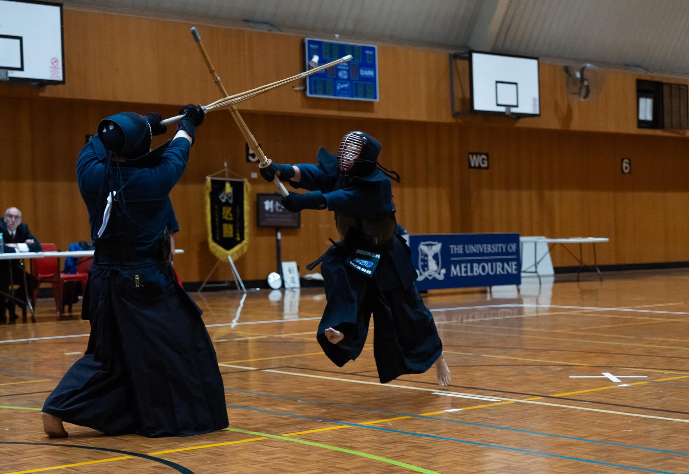
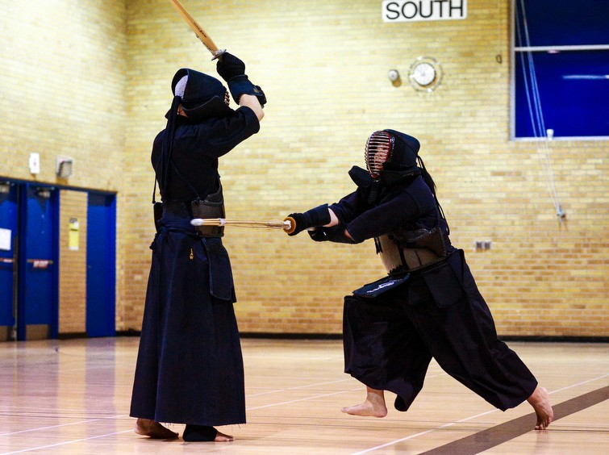

- Kendo is a traditional Japanese martial art,
originating in Japan in the 19th century and
spreading around the world for over 100 years.
Today, kendo has become a sport and is popular
all over the world.
Rules
The basic rule is simple. The match lasts three minutes,
and you get one point for hitting your opponent's men(head),
kote(wrist), do(body), and tsuki(throat) with your sinai(bamboo sword).
The first player to score two points within the time limit wins,
and if the score is still tied after three minutes, the match goes into
extra time. In extra time, whoever scores one point first wins.
In kendo, the referee checks the momentum, spirit, and posture during
the attack to award a point, meaning that a point is not scored simply
because the sword touches the opponent. There are three referees: one head referee
and two assistant referees. The head referee is in charge of the game, but all
three referees have equal power when it comes to scoring. You can get a point
when two or more referees agree.
Fouls include dropping the bamboo sword, leaving the field, touching your own
or your opponent's bamboo sword without the referee's permission, engaging in
rough behaviour that intentionally causes harm to an opponent, or displaying
unsportsmanlike conduct. If you are fouled twice, your opponent scores 1 point.
For a more in-depth look at the kendo please visit the All Japan Kendo Federation website.
Photos
 |
 |  |
|---|